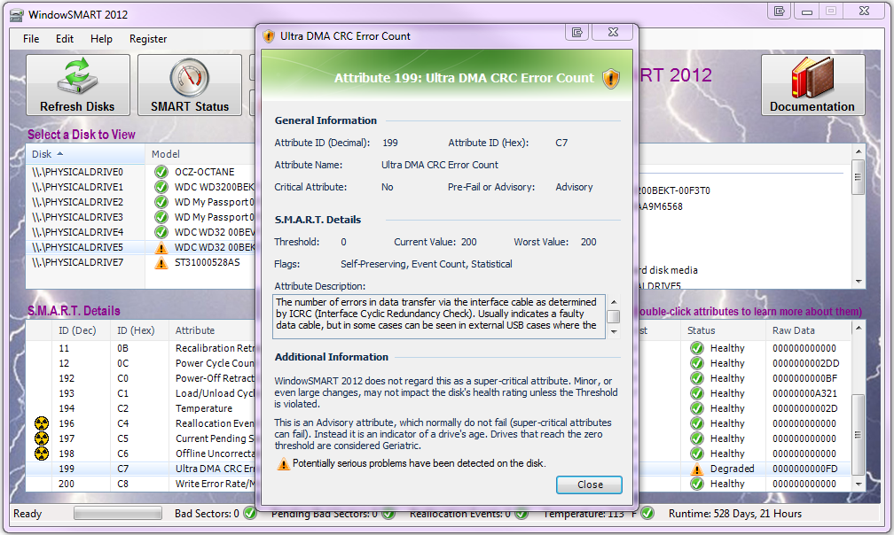
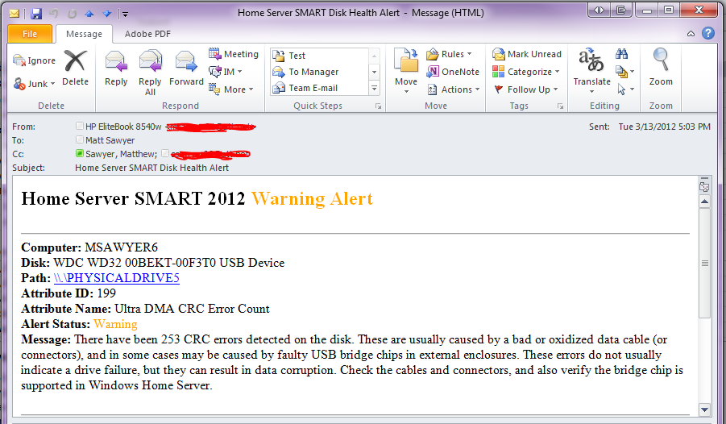

Automatic Disk Health Monitoring and Alerting
When you install WindowSMART 2015, a special component called a Windows Service is installed. Windows services are special applications that are designed to run at computer boot-time, and run continuously, whether or not a user is logged on. The WindowSMART 2015 Service starts automatically each time your computer is rebooted, and runs continuously without any intervention on your part.
The Home Server SMART Service polls your disks at a predefined interval, by default every three minutes. You can adjust the interval to as little as once per minute to as high as once per week (10800 minutes). Be careful about using large time intervals. Some people prefer longer intervals to allow their drives to sleep (go into power-save mode) for extended periods, since SMART polling will awaken a sleeping disk. Large intervals, however, could potentially allow a serious problem to fester for days before it is detected and reported.
The service performs four major operations at each polling interval:
The below screen capture shows a computer with a pair of unhealthy disks. The highlighted disk has generated 253 Ultra DMA CRC errors. While the disk has not yet violated any SMART thresholds, Ultra DMA CRC Error Count is often an indicator of a bad data cable or potentially a faulty USB enclosure. Double-clicking on any attribute will bring up a dialogue that explains the attribute in further detail.

Below is a sample email that indicates the problem detected. The alert provides information so you can readily identify which disk is the guilty party.
